The Visual Studio IDE
Table of Contents
- Visual Studio Community
- Download
- Installing
- First Launch of Visual Studio
- Configure Visual Studio
- The Environment
- Building (Compiling) a Project
- Running a Application
- Opening An Existing Project
- Further Reading
Visual Studio Community
There are many code editors you can use to develop .NET applications. In this course, you will use the Visual Studio Community Integrated Development Environment (IDE).
For the purposes of these course notes, Visual Studio Community will simply be referred to as Visual Studio or VS.
Visual Studio is a free IDE for developing .NET applications. The install is modular, allowing you to install the things you need to develop the type of applications you want.
Visual Studio is a very complex tool and is not really intended for beginner programmers. That being said, Visual Studio is the best and most efficient IDE for developing Windows applications. Take time early in this course to practice using Visual Studio.
Note to Mac Users
Although there is a version of Visual Studio for Mac, you will not be able to complete this course with it. You will require a Windows OS to complete this course. You can:
- Use Boot Camp (or equivalent software) to run Windows on your Mac.
Download
-
Navigate to https://visualstudio.microsoft.com/vs/community/ using a browser on your computer.
-
Click the Download Visual Studio link to download the installer executable file.
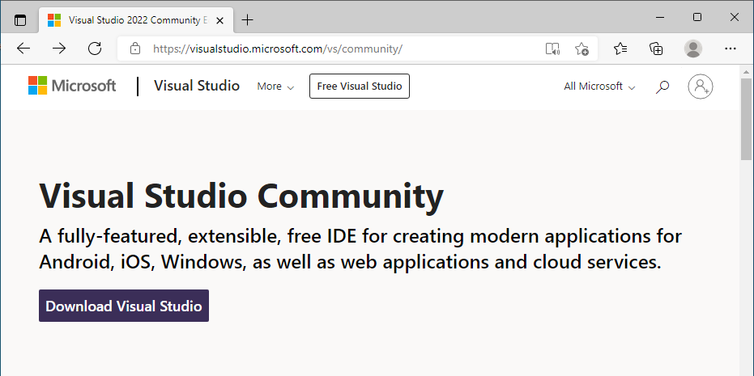
Depending on your browser settings, the install file may download automatically to the default download directory.
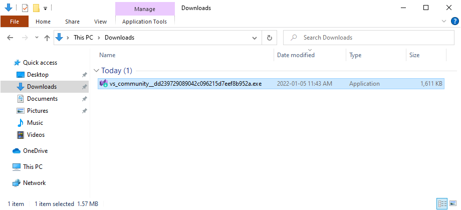
Installing
-
Run the installer by double-clicking on the installer executable file.
-
It is very likely the installer will need to do some configuration before the install process happens.
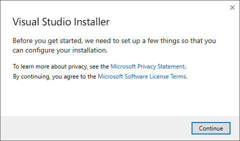
Click the Continue button.
When the installer application loads, you will be presented a window where you will choose the development tools you wish to install. The initial page should display Workloads. If not, click Workloads.
-
Check only the following item(s):
- .NET desktop development
You can change the directory that Visual Studio will get installed to in the bottom left corner of the window.
-
Click the Install button located in the bottom right corner.
The installation could take more than an hour to download and install the selected tools, depending on your system and internet connection.
When the installation completes, you can close the installer.
First Launch of Visual Studio
When you launch Visual Studio for the first time, you will be prompted to sign in using a Microsoft account. You must sign in, in order to unlock the IDE. It will also enable you to use services like Git.
- If you have a Red River College account, you can sign in with your Red River College credentials.
- If you have a Microsoft account, you can sign in with your Microsoft account.
- If you don’t have a Microsoft account, and would like to sign in, you can click the Sign up link.
- If you don’t wish to sign in, click the Not now, maybe later link.
If you do not sign in, the application will prompt you for a license. You will need to sign in to unblock yourself. For more information about signing in to Visual Studio click here.
Configure Visual Studio
- Launch Visual Studio Community.
-
Open Visual Studio without Code.
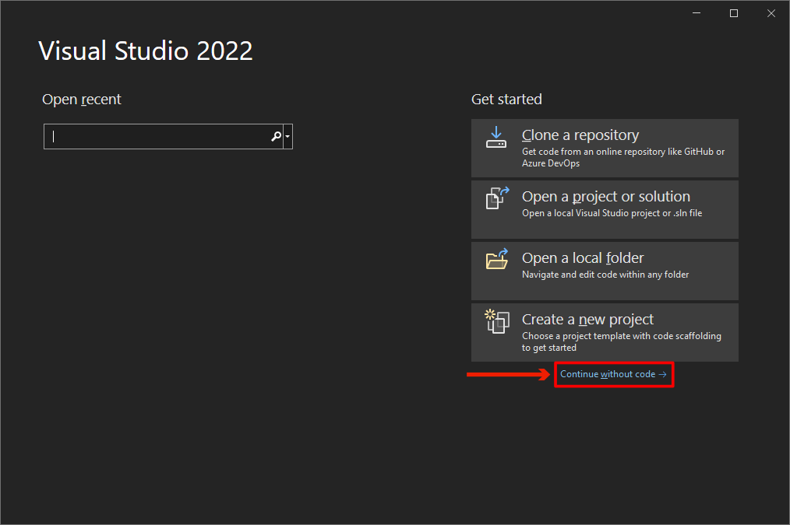
-
Go to Tools > Options in the menu strip. This will open the Options dialog window.
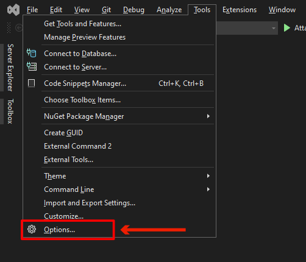
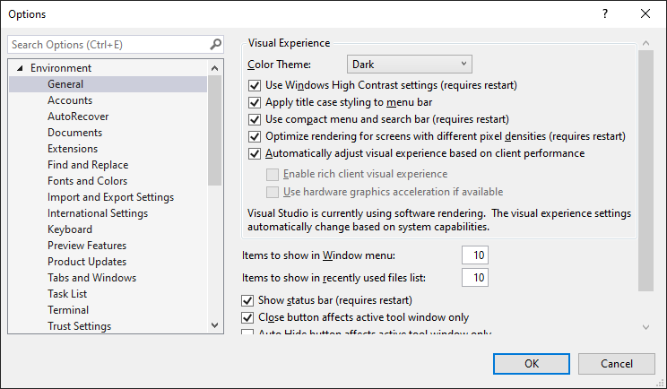
Recommended Option Changes
-
Disable line completion.
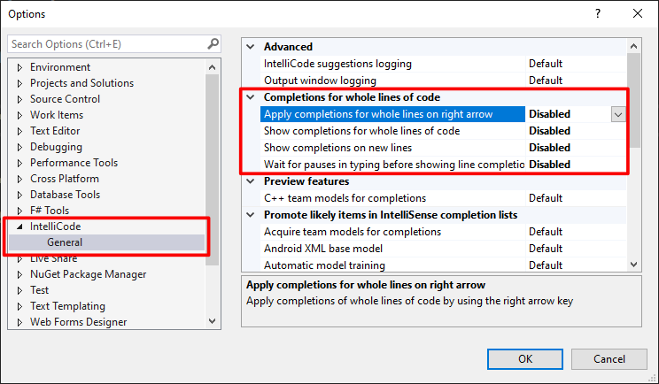
Disabling line completions disables IntelliCode from prompting you for completion suggestions. These completion suggestions sound like they would be a great thing, but they are usually not what you want to do. They can be very tempting to use and will most likely lead to mistakes. Also, it is not a good learning tool.
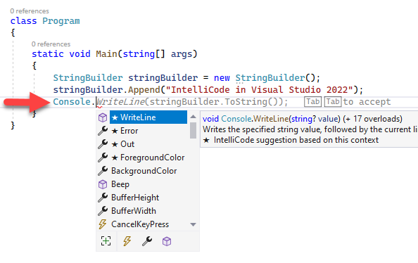
Optional Option Changes
-
Update the color theme of the Visual Studio user interface.
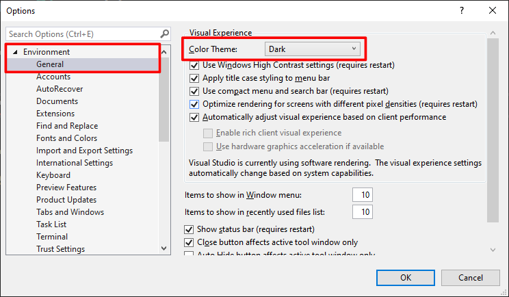
-
Update the default save location for projects.
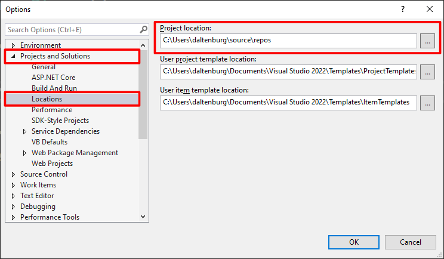
-
Disable CodeLens.
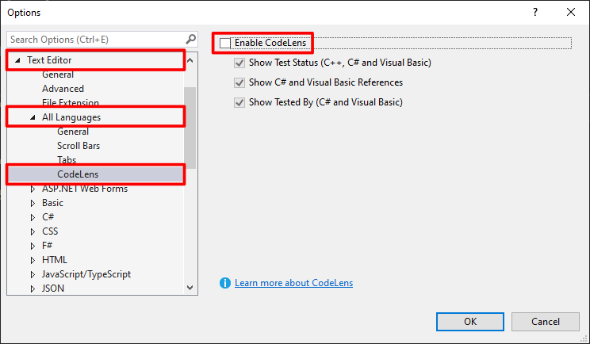
Disabling CodeLens removes the reference count above the declaration of classes and its members.
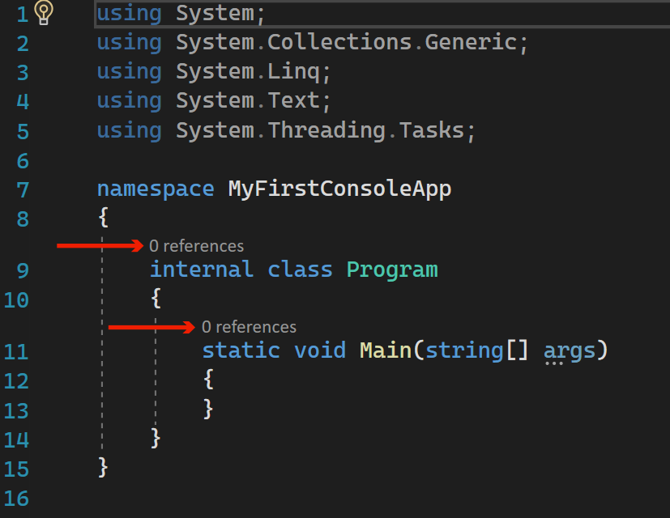
You may be required to close all Visual Studio Community instances in order for the option changes to be applied.
It is not recommended to make any other options changes.
Visual Studio Extensions
Extensions are tools that extend the functionality of Visual Studio.
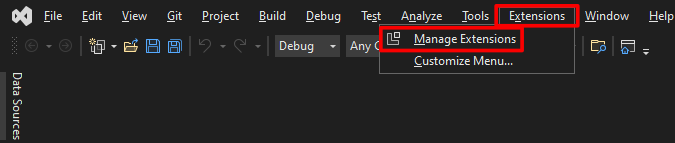
To install an extension, you’ll need to open the Manage Extension dialog window, search for an extension in the Online catalogue and click the Download button to download and install the extension.
Required Extension Install
-
Live Share
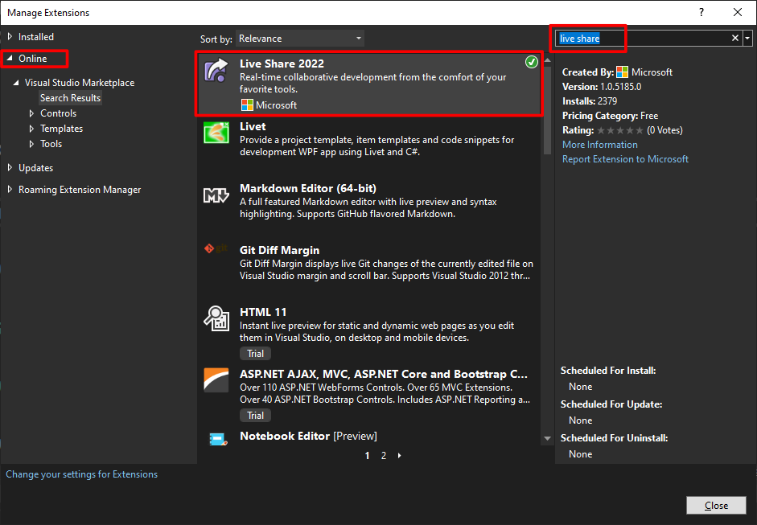
The Live Share extension may have be installed during your Visual Studio Community install. If there is a green check mark icon in the top right corner of the extension in the search result list, this means the extension is already installed. If you don’t see the green check mark, you will need to download and install this extension.
Recommended Extension Install
-
Spell Checker
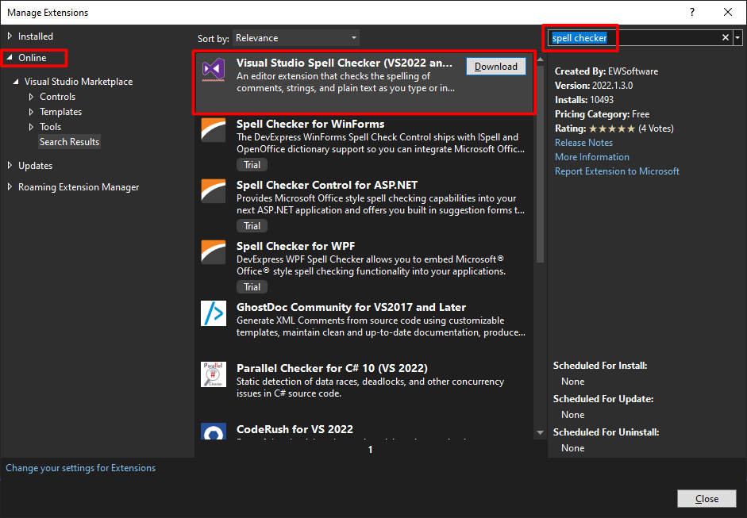
You may be required to close all Visual Studio Community instances in order for the option changes to be applied.
It is not recommended to install any other extensions.
The Environment
The first step to learning the Visual Studio tool is to explore the layout of the interface.
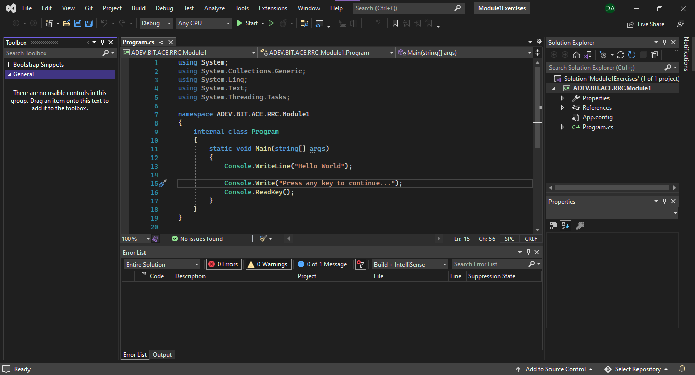
- Menu Strip - Where you can find all the functionality of Visual Studio.
- Toolbar - Where you can find common Visual Studio functions.
- Toolbox Panel - You will use this panel later in the course.
- File Editor - Where you edit source code.
- Solution Explorer - Where you manage solutions and projects.
- Properties Panel - Where you can find and modify information about items selected in Visual Studio.
- Error List/Output Panel - Where errors and the results of building a project are listed.
Solution Explorer
The Solution Explorer, typically docked to the top right of the Visual Studio environment, is the most convenient way to manage your Visual Studio Solution and Projects.
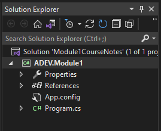
The Solution Explorer displays the solution, projects, and project files and resources as a tree. Each item in the tree is a node. The root node (top item), is the Solution Node. The nodes attached to Solution Node are the Project Nodes. The nodes attached to the Project Nodes represent resources for the project they are attached to.
Adding Source Code Files
To add a new file to a project, Right-click the Project Node and choose “Add > New Item…” from the context menu.
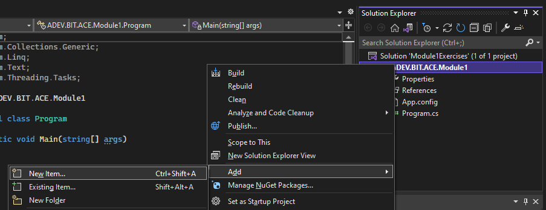
This will launch the Add New Item dialog window. This window will list many templates for items you can add to the project.
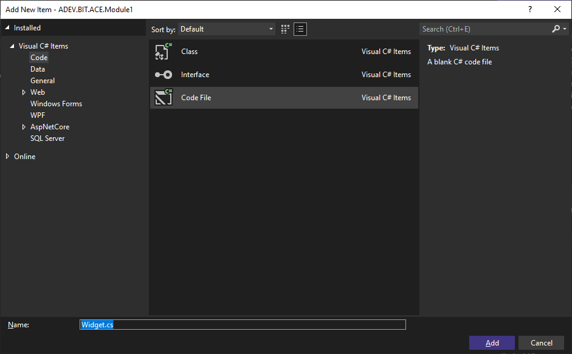
It is recommended that at the beginning of your training to choose the “Code File” template. This template is really just a blank file.
Don’t forget to name the file at the bottom of the dialog window and ensure you keep the .cs file extension.
Removing Source Code Files
To remove an item from a project, Right-click the Item Node you wish to remove and choose “Delete” from the context menu.
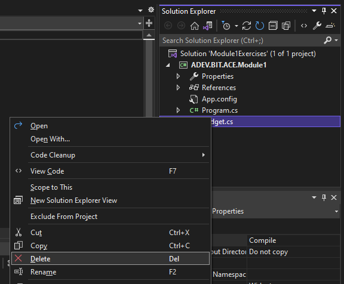
It is common for Visual Studio beginners to delete a file using Windows File Explorer. If you do this, the file node will still show up in Visual Studio, but will be represented as a broken link.
Always manage your Visual Studio Project files and resources using Visual Studio’s Solution Explorer.
Building (Compiling) a Project
In the previous level of programming, you were accustom to compiling each source code file. On a successful compilation, a .class file was created. In Visual Studio, source code is compiled by building the project. This will produce a single file called an assembly.
To build (compile) a project, right-click the Project Node and choose Build from the context menu.
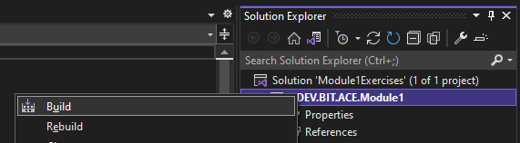
If any of the items within the project cause an error, typically syntax related, those errors will show up in the Error List.
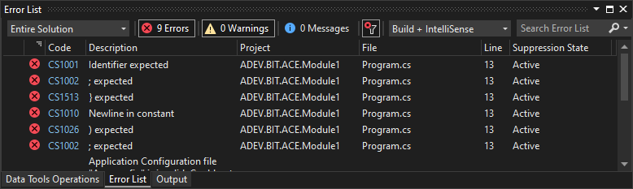
On a successful build, the Output Panel will indicate a successful build.
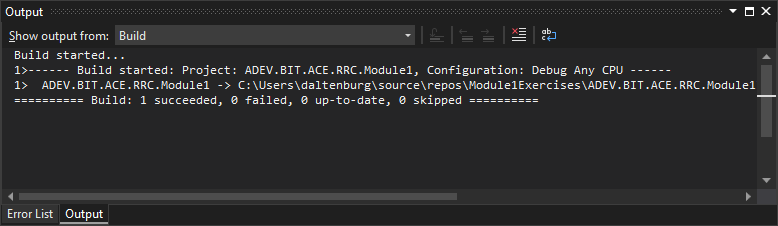
A new version of the assembly and other files will be generated in the bin\Debug directory within the Project directory.
Running a Application
There are two ways to run a application:
- Execute the Executable Assembly (.exe) file within the bin\Debug directory.
- Execute the program within Visual Studio. Go to Debug > Start Debugging in the Visual Studio menu strip.
Class Library Projects do not build to an Executable Assembly (.exe). Therefore, running it will not work.
Opening An Existing Project
To open an existing project, locate the Solution File (.sln) for the solution the project is apart of. Double-clicking the solution file will launch Visual Studio and load the solution and all the solutions projects within Visual Studio.